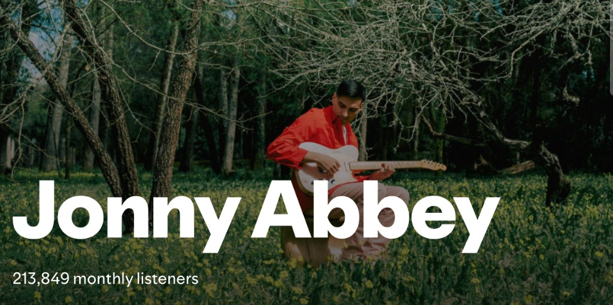

The world needs your art.
But life has a way of pushing it aside.
TWNYA is Isaura’s private creative mentorship
for professionals who refuse to let their creative life disappear.
If you have unfinished songs, a half-written book, or projects waiting for years, TWNYA helps you move them forward with clarity and structure.
Free discovery call. Isaura personally reviews every request.
No commitment required.
Isaura has built careers in both music and marketing
One example of what happens
I work with a small number of people each year, helping artists and professionals balance creative work with demanding lives.

“In one session, what was a vague idea became a plan. Today I have millions of streams and a sustainable music career.”
— Jonny Abbey, music artist
Isaura came into my life at a time when I was transitioning into lo-fi — I had a strong desire to create, but also real doubts about my work and whether it made sense to share it.
Isaura is highly creative, empathetic, and energetic, with a rare ability to deeply respect the artistic essence of the people she works with. Her approach is grounded in strong ethics and a genuine enthusiasm that is absolutely contagious.
In just one creative coaching session, what had been a vague idea started to take shape. The way she believed in my music, and the solutions she brought, made all the difference. It stopped being a “what if” and became a plan.
From that moment on, I started taking action — step by step — with more clarity and confidence.
Today, I’ve gone from not releasing music under my own name for years to reaching several million streams per year and building a nearly sustainable career with my own music.
Without that initial push, I honestly don’t know if I would have made it this far.
— Jonny Abbey
Isaura's career in numbers
The quiet problem many creatives face
Many artists don’t stop creating because they stop caring.
They stop because life gets busy.
Careers grow. Responsibilities multiply.
Creative work slowly moves into the background.
Songs remain unfinished.
Books stay half written.
Ideas accumulate in notebooks and voice notes.
Not because the talent disappeared.
Because structure disappeared.
And that’s exactly what Isaura helps artists rebuild.
A review I want to emphasize
Isaura is an outstanding creative coach and one of the most gifted individuals I’ve met. She has the capacity to ask the right questions, listen closely, then tailor her approach to offer pragmatic and productive solutions that spark seismic change.
When I first started meeting with Isaura, I was frustrated by blocks in both my creative and professional life. She helped me identify these blocks so we could co-create ways to move through them. In addition to expert guidance, she always offers practical tools, and as I’ve integrated these strategies into my daily routine, I have seen immediate and powerful results.
Isaura has exceptional clarity and can go straight to the heart of any issue. She is never overbearing, but rather pushes back in the right places and holds you accountable. She will champion your creativity, challenging you to protect and celebrate it. Then she works with you to build the infrastructure you need to succeed.
I can’t recommend Isaura highly enough. I leave every session invigorated and hopeful, excited about next steps. She is a liberator of creative souls. My work with her has truly brought me to life.
— Bree Barton, writer, published author
This is creative mentorship
TWNYA is not about motivation.
It is about creative execution.
A structured space to think clearly about your work, build a realistic plan, and move projects forward.
Isaura does not work on your projects.
Instead, she helps you decide:
- What to focus on
- What to ignore
- What the next step should be
- How to maintain creative momentum
- How to build a plan and stay accountable to it
The goal is simple:
Move from ideas to finished work.
A few people I’ve worked closely with
Isaura is exceptional at what she does.
As a successful artist, she has been through every every creative challenge possible and that makes her an invaluable coach and advisor whatever stage your project is in.
She helped me bring a close to a project I had worked on for 7 years but struggled to finish and I’d genuinely recommend her to anyone.
— Nasos P., communicator and podcaster
Isaura helped me define my goals, organize my priorities, and create a structure I could actually follow.
Without her guidance, I would have felt much more anxious and scattered. Her support helped me build confidence, find focus, and move forward in a much more intentional way.
She combines strong structure with a high level of emotional intelligence, which makes a real difference when you’re navigating complex decisions.
— Julie K., career coaching
Who this is for
TWNYA works best for people who:
- Have a professional career but maintain a serious creative practice
- Artists and creative professionals, such as musicians, writers, filmmakers, photographers and designers
- Have meaningful projects they want to finish
- Struggle with consistency, clarity or structure
- Want experienced guidance while developing their work
Many TWNYA members live in two worlds:
A professional one, and a creative one.
This mentorship helps keep both alive.
TWNYA is not for everyone
This program is not designed for:
- People looking for quick hacks or shortcuts
- People still trying to figure out what they want to create
- People unwilling to commit time to their art
What we work on together
Each person arrives with different projects.
But most sessions focus on:
Finishing creative projects that have stalled
Creating a realistic structure for creative work
Building momentum and consistency
Navigating the emotional side of making art
Preparing work for release or publication
Maintaining a creative identity alongside a career
The work is practical.
No formulas. No productivity theatre.
Just clear thinking about the work that matters.
How the program works
TWNYA is intentionally small.
Isaura works with a limited number of artists at a time so each project receives proper attention.
Each membership includes:
This creates a rhythm that helps creative work move forward consistently.
If you need more regular support, you can email Isaura to discuss a structure that fits your situation. isauramusic@gmail.com
Free discovery call. No commitment required.
What this work leads to
Over the years, Isaura has worked with artists, writers and entrepreneurs navigating both creative and professional lives.
The work is not about volume.
It’s about finishing what matters.
People who engage in this process typically:
- Finish creative projects they had been postponing for years
- Build a structure that allows consistent creative work
- Regain clarity on what they are actually trying to create
- Release work into the world with more confidence
- Reconnect with their identity as creators
This is not a formula.
It’s a way of working that helps creative work move forward consistently.
What this actually changes
- You stop thinking about your project every day and doing nothing
- You start finishing work consistently
- You build a system you can rely on
- You stop feeling like you’re wasting your creative potential
More experiences
Working with Isaura helped me clarify and structure many of the questions I was asking myself.
With her guidance, I was able to identify what mattered, focus on it, and follow through. Having that level of clarity and accountability made a real difference.
She brings a perspective that simplifies things in a way that helps you move forward with more confidence.
— Julia S., entrepreneur and content creator
I came to Isaura at a moment where I felt stuck in a difficult situation that was affecting my creative work.
She helped me navigate a challenging dynamic with a partner that had been blocking me, and regain clarity on what I wanted and how to move forward.
That shift allowed me to reconnect with my work and make decisions with much more confidence.
— Cécile, filmmaker
The investment
TWNYA is ongoing monthly mentorship. Investment is discussed on your discovery call.
Includes:
- 2x private 90-minute mentorship sessions per month
- Weekly async check-ins via Telegram or WhatsApp
- Project planning & creative accountability
- Ongoing support between sessions
TWNYA works best over at least three months,
giving enough time to build momentum and make meaningful progress.
If the program is not working for you, you can cancel anytime.
Free discovery call. No commitment required.
TWNYA works with a limited number of people at a time.
Have doubts? Email Isaura at isauramusic@gmail.com.
Frequently asked questions
TWNYA is for professionals who maintain a serious creative practice and want experienced guidance bringing meaningful work forward.
No. Many TWNYA members maintain careers alongside their creative work.
No. This is a structured working system focused on execution, not motivation.
TWNYA works best over 3 months, which gives enough time to build momentum and make meaningful progress. Many people choose to stay longer, but if the program is not working for you, you can cancel anytime.
Most sessions focus on one or two live projects. Together you clarify priorities, decide what to focus on and what to ignore, map the next concrete steps, and make sure there is a realistic plan you can follow between sessions.
Yes. The program has a core structure, but it can be adapted depending on your availability and needs.
If you need more regular support, you can email Isaura to discuss a structure that fits your situation.
isauramusic@gmail.com
No. Isaura does not produce, write or manage your projects for you. Her role is to help you think clearly about the work, build structure around it, and stay accountable so you can move it forward yourself.
Members work on albums and EPs, books, films, visual projects, hybrids between art and business, and long‑term creative practices. The common thread is that the work is meaningful, and has often been postponed for years.
This is not a generic product: it is ongoing structure, direction, and accountability applied to your work every week. Exact investment is discussed on your discovery call once it is clear TWNYA is the right fit.
TWNYA is designed for people who already have serious projects or a sustained practice. If you are still trying to figure out what you want to create, it may be better to explore on your own first and return once you have clearer work you want to move forward.
Between calls you can send check‑ins, questions and updates via Telegram or WhatsApp. Isaura replies weekly so you stay connected to the work, even when life gets busy.
People looking for quick results or passive learning. This requires showing up and doing the work.
Sessions are scheduled in advance and can usually be moved with reasonable notice. If your life or work changes in a way that makes TWNYA unworkable, you can pause or cancel your membership.
If you've been postponing a project that matters to you,
this might be the moment to move it forward.
You don’t need more ideas.
You need a way to actually move them forward.
The world needs your art.
Free discovery call. No commitment required.
TWNYA works with a limited number of people at a time.
About Isaura
Creative mentorship from someone who lives in both worlds.
Isaura is a recording artist, producer, songwriter, entrepreneur and consultant who has spent years navigating creative and professional worlds in parallel.
Her music career includes:
- Being signed to Universal Music Group
- Performing at major festivals
- Becoming a finalist on a national television music competition
- Winning another national show and representing Portugal at the Eurovision Song Contest
- Releasing music independently before joining an indie label connected to Sony Music Entertainment
- Releasing hundreds of songs across her career
- Collaborating with leading artists in Portugal
- Writing songs for multiple recording artists
- Founder of Loop Remote, helping ideas move forward at scale
Alongside her artist career, Isaura also built a professional career in marketing, growth and operations.
She held leadership roles while actively managing her own artist career, helping scale a startup from 5 to 200 people and contributing to the growth of a multi-million-dollar business.
Her work focused on building systems, improving remote collaboration, and helping teams and creative projects move forward with clarity and structure.
Over the years she has mentored recording artists, writers and entrepreneurs who want to move meaningful projects forward without abandoning their professional lives.
TWNYA brings together:
Creative practice and disciplined execution.
Free discovery call. No commitment required.
TWNYA works with a limited number of people at a time.
Isaura in photos


Isaura in videos